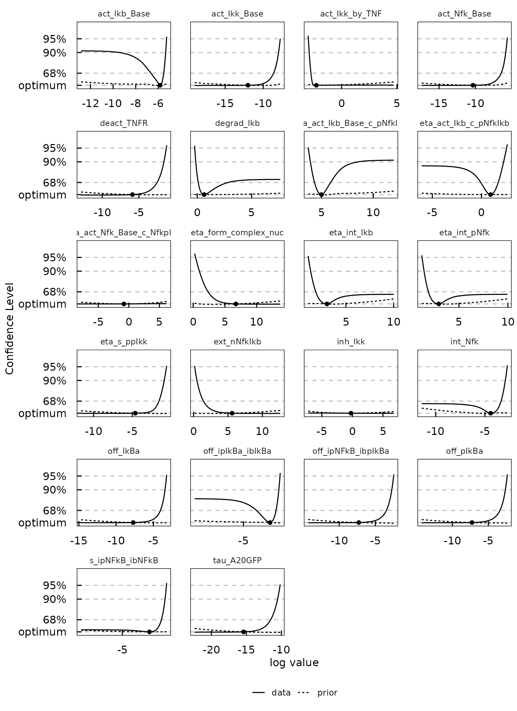
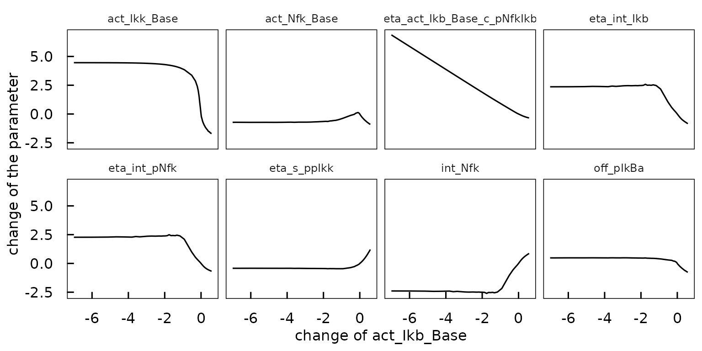
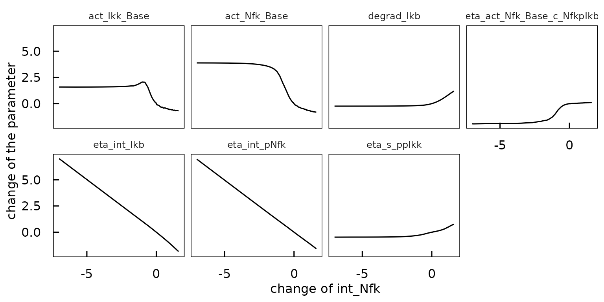
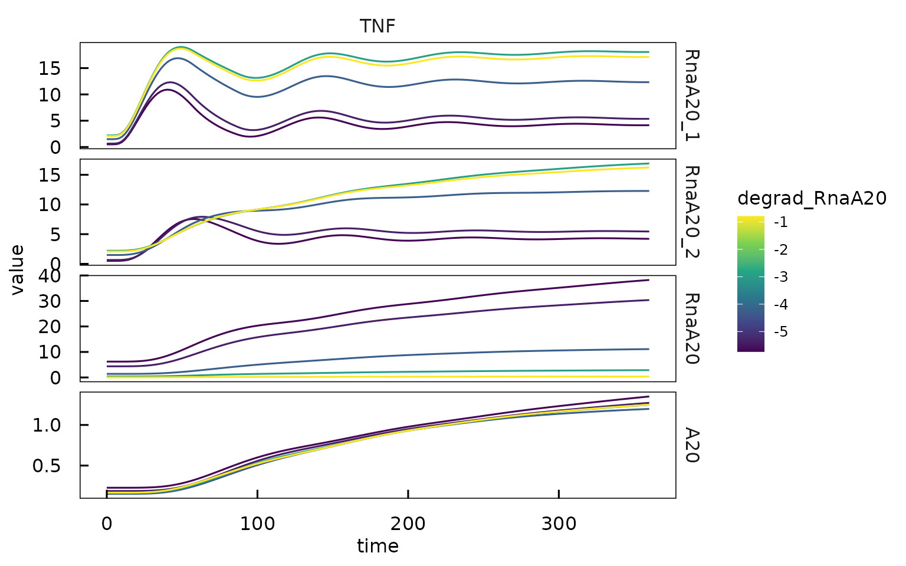
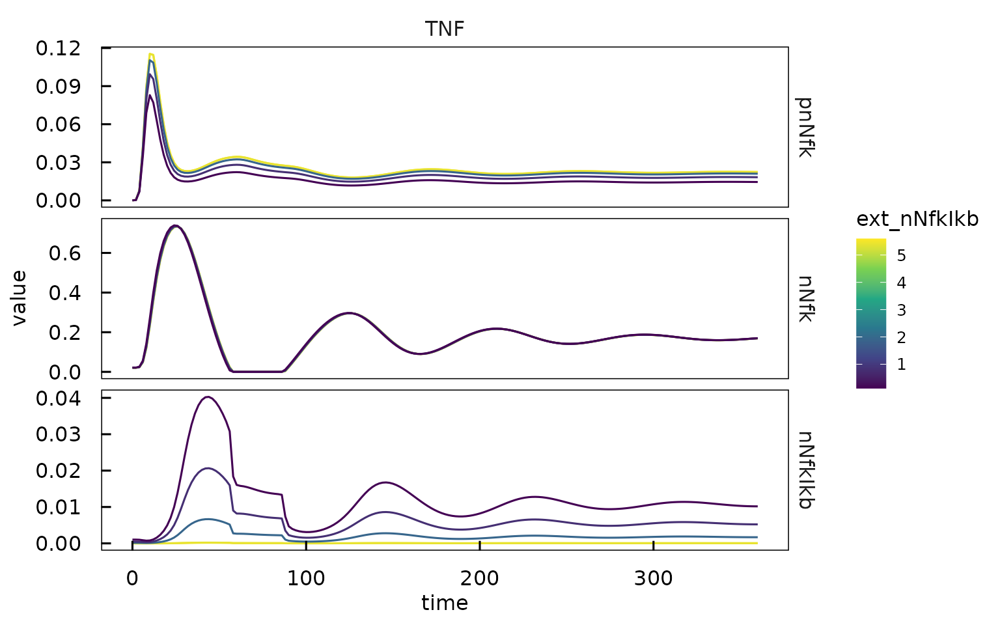
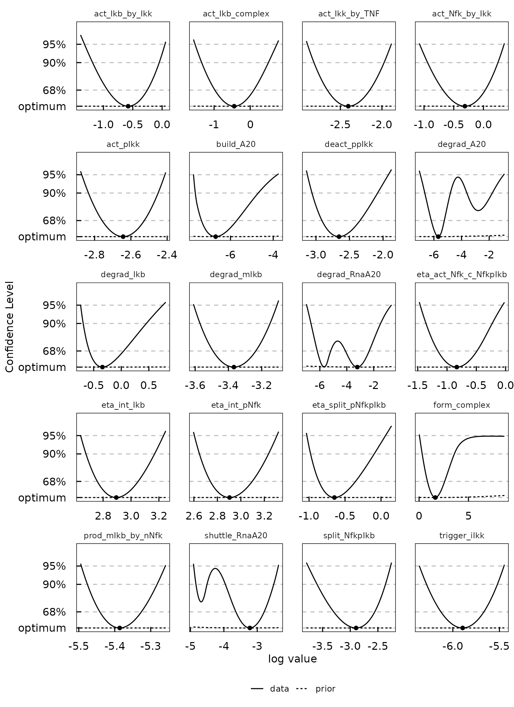
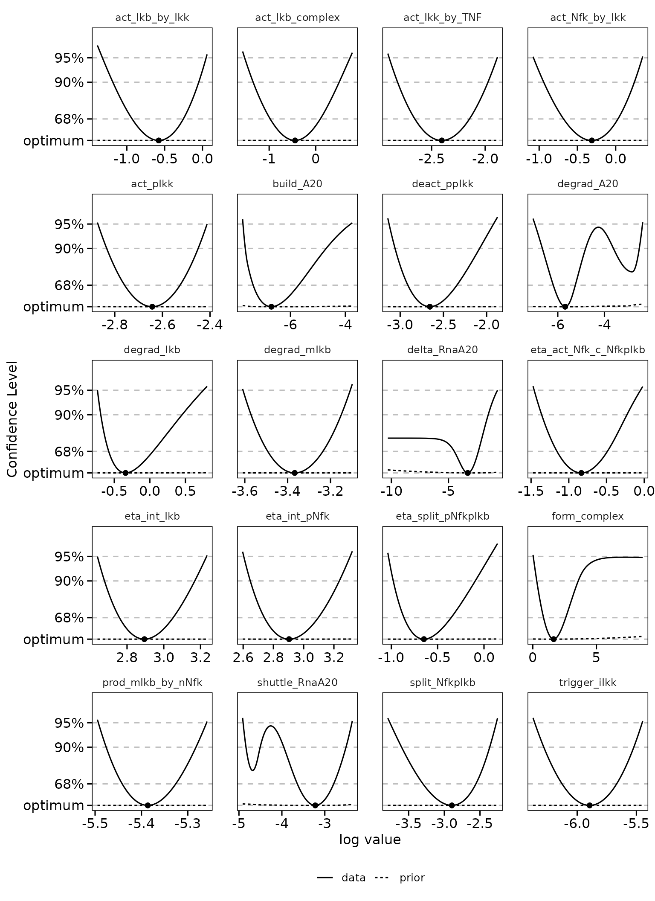

The profile likelihood [1] shows how well the data constrain each parameter. This chapter profiles the full model at the best fit of Optimization, tests the core model of the publication and fits a reduced model.
Profile likelihood and confidence intervals
The profile of a parameter is the data term along the path on which
the other parameters minimize the objective with that parameter fixed.
Here the objective has a prior of standard deviation 20 on the log scale
at the best fit, so that the data term shapes the profiles. Data terms
within 3.84, the 95 % quantile of \(\chi^2_1\), of the minimum form the 95 %
confidence interval (Methods >
Profile likelihood). stepControl = list(stop = "data")
ends a profile there, confint(val.column = "data") reads
the interval, profileThreshold() gives other levels. A
profile open towards \(-\infty\) means
the process can be switched off, towards \(+\infty\) that it can be instantaneous (Methods > Shapes).
method = "integrate" (default) follows the constrained
optimum as a curve, with
algoControl = list(reoptimize = TRUE) corrected by
trust(); method = "optimize" refits at every
step.
entry of stepControl
|
"integrate" |
"optimize" |
controls |
|---|---|---|---|
stepsize |
1e-4 |
1e-2 |
first step |
min, max
|
1e-4, Inf
|
1e-4, Inf
|
bounds of the step |
atol, rtol
|
1e-2 |
1e-1 |
mismatch of predicted and actual change |
limit |
500 |
100 |
steps per side |
stop |
"value" |
"value" |
part of the objective compared with the threshold |
limits bounds the profiled parameter, side
profiles one side, cores profiles in parallel (Remote
computing).
Profiles of the full model
profiles.R refits the best fit of the multistart to the
tolerances of the profiles,
# the best fit of the multistart, refitted to the tolerances of the profiles
refit <- trust(obj, as.parvec(readRDS("results/fits.rds")), fixed = gauge, rinit = 0.1, rmax = 10,
iterlim = 1000, tolControl = tolerances)fits the objective of the profiles once,
# the profiles replace the prior of model.R by one of standard deviation 20 at the refit, so that
# the data term shapes them; they start at the optimum of that objective, one fit from the refit
objProfile <- normL2(data, prd, e) + constraintL2(refit$argument, sigma = 20) + stability
fitProfile <- trust(objProfile, refit$argument, fixed = gauge, rinit = 0.1, rmax = 10,
iterlim = 1000, tolControl = tolerances)
best <- fitProfile$argumentand profiles each side until the data term has risen by the threshold
or the parameter has moved by 7. The profiles are loaded from
results/profiles.rds:
# the profiles integrated, every step re-optimized, each side until the data term has risen by the
# threshold or the parameter has moved by 7 on the natural log scale, the settings of refit.R.
# helix.R runs one profile per array task.
limits <- c(lower = -7, upper = 7)
profiles <- profile(objProfile, best, names(best), fixed = gauge, limits = limits,
stepControl = list(stop = "data"), algoControl = list(reoptimize = TRUE),
optControl = list(iterlim = 100, tolControl = tolerances),
cores = getOption("dMod2.cores"))
saved <- readRDS("results/profiles.rds")
refit <- saved$refit
fitProfile <- saved$fitProfile
profiles <- saved$profilesThe data term at the refit and at the optimum of the profiles:
dataTerm <- function(p) attr(obj(p, fixed = gauge), "data")
c(refit = dataTerm(refit$argument), profiles = dataTerm(fitProfile$argument))
#> refit profiles
#> -511.1690 -516.6701Without the prior of model.R the data term falls by 5.5.
No profile lies below the fit:
intervals <- confint(profiles, level = 0.95, val.column = "data")
intervals$shape <- with(intervals, ifelse(is.finite(lower) & is.finite(upper), "finite",
ifelse(is.finite(lower), "open above",
ifelse(is.finite(upper), "open below", "open on both sides"))))
table(intervals$shape)
#>
#> finite open above open below open on both sides
#> 42 5 14 2
rownames(intervals) <- NULL
intervals[intervals$shape != "finite", c("name", "value", "lower", "upper", "shape")]
#> name value lower upper
#> 1 act_Ikb_Base -5.7919000 -Inf -5.2235302
#> 3 act_Ikk_Base -12.4290599 -Inf -7.7809870
#> 4 act_Ikk_by_TNF -2.2158982 -3.0482695 Inf
#> 5 act_Nfk_Base -10.7053150 -Inf -5.6748730
#> 11 deact_TNFR -6.4916921 -Inf -1.2841902
#> 13 degrad_Ikb 0.6960847 -0.2419782 Inf
#> 16 eta_act_Ikb_Base_c_pNfkIkb 4.9730426 3.7242550 Inf
#> 17 eta_act_Ikb_c_pNfkIkb 0.8955969 -Inf 2.5506495
#> 18 eta_act_Nfk_Base_c_NfkpIkb -0.6876100 -Inf Inf
#> 21 eta_int_Ikb 2.9003857 1.0610826 Inf
#> 22 eta_int_pNfk 2.8593583 1.2383545 Inf
#> 23 eta_s_ppIkk -4.3338331 -Inf -0.5029478
#> 27 inh_Ikk -0.4859866 -Inf Inf
#> 28 int_Nfk -4.3108096 -Inf -2.7384181
#> 29 off_A20GFP -0.7473438 -Inf -0.5109775
#> 31 off_IkBa -7.5714193 -Inf -3.2170736
#> 32 off_ipIkBa_ibIkBa -2.5303205 -Inf -1.6106014
#> 36 off_ipNFkB_ibpIkBa -7.1843412 -Inf -2.4733675
#> 39 off_pIkBa -7.2101743 -Inf -2.3816122
#> 48 s_ipNFkB_ibNFkB -2.2371895 -Inf -0.4943420
#> 60 tau_A20GFP -15.3359687 -Inf -10.1752749
#> shape
#> 1 open below
#> 3 open below
#> 4 open above
#> 5 open below
#> 11 open below
#> 13 open above
#> 16 open above
#> 17 open below
#> 18 open on both sides
#> 21 open above
#> 22 open above
#> 23 open below
#> 27 open on both sides
#> 28 open below
#> 29 open below
#> 31 open below
#> 32 open below
#> 36 open below
#> 39 open below
#> 48 open below
#> 60 open belowThe open profiles; on an open side the prior rises by up to 0.5:
# panels wide enough for the parameter names, few ticks and the legend below
readable <- list(ggplot2::scale_x_continuous(breaks = scales::breaks_pretty(n = 3)),
ggplot2::guides(x = ggplot2::guide_axis(check.overlap = TRUE)),
ggplot2::theme(strip.text = ggplot2::element_text(size = 9),
panel.spacing.x = grid::unit(1.5, "lines"), legend.position = "bottom"),
ggplot2::labs(x = "log value", color = NULL, linetype = NULL))
open <- intervals$name[intervals$shape != "finite"]
plotProfile(profiles, mode %in% c("data", "prior"), name %in% open, ncol = 4) + readable
Parameter paths
plotPaths() shows how the other parameters compensate
along a profile. Along act_Ikb_Base,
eta_act_Ikb_Base_c_pNfkIkb rises by the same amount: the
data determine the product. Shown are the parameters that move by more
than 1:
# the parameters that move along the profile of `par` by more than `by` on the log scale
movers <- function(par, by = 1) {
d <- as.data.frame(profiles)[profiles$whichPar == par, ]
others <- setdiff(names(fitProfile$argument), par)
others[vapply(d[others], function(v) diff(range(v)) > by, NA)]
}
for (par in c("act_Ikb_Base", "int_Nfk"))
print(plotPaths(profiles, partner %in% movers(par), whichPar = par) +
ggplot2::facet_wrap(ggplot2::vars(partner), ncol = 4) +
ggplot2::scale_x_continuous(breaks = scales::breaks_pretty(n = 3)) +
ggplot2::theme(strip.text = ggplot2::element_text(size = 9)) +
ggplot2::labs(x = paste("change of", par), y = "change of the parameter"))

Predictions along a profile
plotArray() predicts along one side of a profile,
colored by the profiled parameter; fixed adds the gauge.
Along the upper side of degrad_RnaA20, RnaA20
falls by two orders of magnitude while A20 stays nearly the same:
states <- x * pSS * p
minutes <- seq(0, 360, 2)
chain <- c("RnaA20_1", "RnaA20_2", "RnaA20", "A20")
plotArray("degrad_RnaA20", profiles, states, minutes, name %in% chain, condition == "TNF",
direction = "up", nSim = 5, fixed = gauge)
Along the lower side of ext_nNfkIkb the nuclear complex
builds up at the expense of free and phosphorylated nuclear NFκB; their
sum, read out by nucNFkB, stays the same:
plotArray("ext_nNfkIkb", profiles, states, minutes, name %in% c("nNfk", "pnNfk", "nNfkIkb"),
condition == "TNF", direction = "down", nSim = 5, fixed = gauge)
Core model of the publication
The core model of the publication has 29 reactions [2], Table S5 and fixed values (Tables S8 and S9), on the log scale:
| setting of the core model | parameter of the full model | value |
|---|---|---|
| IKK activated by the receptors only: no basal activation | act_Ikk_Base |
\(-\infty\) |
| no inhibition of IKK by A20 | inh_Ikk |
\(\infty\) |
basal phosphorylation of IκBα only in the complex with pNFκB, at a
rate act_Ikb_complex
|
act_Ikb_Base |
\(-\infty\) |
| IκBα phosphorylated by pIKK in the complexes with NFκB and pNFκB at the same rate | eta_act_Ikb_c_pNfkIkb |
0 |
| NFκB phosphorylated by pIKK only | act_Nfk_Base |
\(-\infty\) |
| ppIKK phosphorylates neither IκBα nor NFκB | eta_s_ppIkk |
\(-\infty\) |
pNFκB released without a separate factor, at
split_NfkIkb
|
eta_split_pNfkpIkb |
0 |
| slow receptor deactivation, 0.001 per minute | deact_TNFR |
\(\ln 10^{-3}\) |
| slow import of NFκB, 0.01 per minute | int_Nfk |
\(\ln 10^{-2}\) |
| fast dephosphorylation of nuclear pNFκB, 1000 per minute | deact_pnNfk |
\(\ln 10^{3}\) |
| fast formation of the nuclear complex, 1000 per minute | eta_form_complex_nuc |
\(\ln 10^{3}\) minus
form_complex
|
| fast export of the complex, 1000 per minute | ext_nNfkIkb |
\(\ln 10^{3}\) |
| no offset of the IκBα blots, no bleaching of A20-GFP |
off_IkBa, off_ipIkBa_ibIkBa,
tau_A20GFP
|
\(-\infty\) |
| one delay step of the A20 transcript instead of two | none |
Against the intervals of the full model:
core <- c(act_Ikk_Base = -Inf, inh_Ikk = Inf, act_Ikb_Base = -Inf, eta_act_Ikb_c_pNfkIkb = 0,
act_Nfk_Base = -Inf, eta_s_ppIkk = -Inf, eta_split_pNfkpIkb = 0,
deact_TNFR = log(1e-3), int_Nfk = log(1e-2), deact_pnNfk = log(1000),
eta_form_complex_nuc = log(1000) - fitProfile$argument[["form_complex"]],
ext_nNfkIkb = log(1000), off_IkBa = -Inf, off_ipIkBa_ibIkBa = -Inf, tau_A20GFP = -Inf)
settings <- intervals[match(names(core), intervals$name), c("name", "lower", "upper", "shape")]
settings$core <- core
settings$inside <- with(settings, core >= lower & core <= upper)
rownames(settings) <- NULL
settings
#> name lower upper shape core
#> 1 act_Ikk_Base -Inf -7.7809870 open below -Inf
#> 2 inh_Ikk -Inf Inf open on both sides Inf
#> 3 act_Ikb_Base -Inf -5.2235302 open below -Inf
#> 4 eta_act_Ikb_c_pNfkIkb -Inf 2.5506495 open below 0.000000
#> 5 act_Nfk_Base -Inf -5.6748730 open below -Inf
#> 6 eta_s_ppIkk -Inf -0.5029478 open below -Inf
#> 7 eta_split_pNfkpIkb -0.8470426 1.4910851 finite 0.000000
#> 8 deact_TNFR -Inf -1.2841902 open below -6.907755
#> 9 int_Nfk -Inf -2.7384181 open below -4.605170
#> 10 deact_pnNfk -1.3227174 0.4162159 finite 6.907755
#> 11 eta_form_complex_nuc 0.2494872 11.5817034 finite 4.966203
#> 12 ext_nNfkIkb 0.1601604 8.5930735 finite 6.907755
#> 13 off_IkBa -Inf -3.2170736 open below -Inf
#> 14 off_ipIkBa_ibIkBa -Inf -1.6106014 open below -Inf
#> 15 tau_A20GFP -Inf -10.1752749 open below -Inf
#> inside
#> 1 TRUE
#> 2 TRUE
#> 3 TRUE
#> 4 TRUE
#> 5 TRUE
#> 6 TRUE
#> 7 TRUE
#> 8 TRUE
#> 9 TRUE
#> 10 FALSE
#> 11 TRUE
#> 12 TRUE
#> 13 TRUE
#> 14 TRUE
#> 15 TRUEEvery setting but one lies in the 95 % interval; the data bound
deact_pnNfk to 0.27 to 1.5 per minute, below the fixed
1000. No profile tests the single delay step, and the publication gives
no reason for it. The likelihood ratio test takes all settings together:
variants.R fits the core model and the variants that
release one setting, loaded from results/variants.rds:
| released | lower by | above full | threshold |
|---|---|---|---|
| two delay steps of the A20 transcript | 4.74 | 22.45 | 27.59 |
separate factor eta_split_pNfkpIkb
|
3.39 | 23.80 | 26.30 |
deact_TNFR estimated |
-0.40 | 27.60 | 26.30 |
int_Nfk estimated |
0.15 | 27.05 | 26.30 |
deact_pnNfk estimated |
1.21 | 25.98 | 26.30 |
form_complex_nuc estimated |
0.00 | 27.19 | 26.30 |
ext_nNfkIkb estimated |
-0.08 | 27.28 | 26.30 |
off_IkBa estimated |
-0.45 | 27.65 | 26.30 |
off_ipIkBa_ibIkBa estimated |
3.01 | 24.18 | 26.30 |
tau_A20GFP estimated |
-1.45 | 28.65 | 26.30 |
The core model lies 27.2 above the full model, against the threshold
27.59 for 17 removed parameters, and is accepted. The two delay steps
and the separate factor together lower the data term by 8.14 at one
added parameter, more than 3.84; reduced.R takes both and
sets the scale s_ipNFkB_ibNFkB, whose profile is open
below, to 0.
Reduced model
The core model with two delay steps, the separate factor and the
scale s_ipNFkB_ibNFkB at 0:
# the core model of the publication (Table S5 of the supplement), with the two delay steps of the
# A20 transcript of the full model and a separate factor for the release of pNFκB
reactionsReduced <- eqnlist() |>
assignCompartment(nIkb = "nucleus", pnNfk = "nucleus", nNfk = "nucleus", nNfkIkb = "nucleus",
volume = "Vnuc") |>
addReaction("TNF", "TNF + TNFR", "uptake * TNF", "receptor activation") |>
addReaction("TNFR", "", "deact_TNFR * TNFR", "receptor deactivation") |>
# IKK activated by the receptors alone, without basal activation and inhibition by A20
addReaction("Ikk", "pIkk", "act_Ikk_by_TNF * TNFR * Ikk", "IKK activation") |>
addReaction("pIkk", "ppIkk", "act_pIkk * pIkk", "IKK phosphorylation") |>
addReaction("ppIkk", "iIkk", "deact_ppIkk * ppIkk", "IKK inactivation") |>
addReaction("iIkk", "Ikk", "trigger_iIkk * iIkk", "IKK recovery") |>
# IκBα phosphorylated by pIKK in both complexes and basally only in the complex with pNFκB;
# NFκB phosphorylated by pIKK only; ppIKK phosphorylates neither
addReaction("NfkIkb", "NfkpIkb", "act_Ikb_by_Ikk * pIkk * NfkIkb", "IkBa phosphorylation by pIKK") |>
addReaction("pNfkIkb", "pNfkpIkb", "act_Ikb_complex * pNfkIkb",
"basal IkBa phosphorylation, pNFkB complex") |>
addReaction("pNfkIkb", "pNfkpIkb", "act_Ikb_by_Ikk * pIkk * pNfkIkb",
"IkBa phosphorylation by pIKK, pNFkB complex") |>
addReaction("NfkIkb", "pNfkIkb", "act_Nfk_by_Ikk * pIkk * NfkIkb", "NFkB phosphorylation by pIKK") |>
addReaction("NfkpIkb", "pNfkpIkb", "act_Nfk_by_Ikk * eta_act_Nfk_c_NfkpIkb * pIkk * NfkpIkb",
"NFkB phosphorylation by pIKK, pIkBa complex") |>
addReaction("NfkpIkb", "Nfk + pIkb", "split_NfkpIkb * NfkpIkb", "release of NFkB") |>
addReaction("pNfkpIkb", "pNfk + pIkb", "split_NfkIkb * eta_split_pNfkpIkb * pNfkpIkb",
"release of pNFkB") |>
addReaction("Nfk + Ikb", "NfkIkb", "form_complex * Nfk * Ikb", "complex formation") |>
addReaction("", "mIkb", "prod_mIkb_by_nNfk * nNfk", "IkBa transcription") |>
addReaction("mIkb", "", "degrad_mIkb * mIkb", "IkBa transcript degradation") |>
addReaction("", "Ikb", "prod_Ikb * mIkb", "IkBa translation") |>
addReaction("pIkb", "", "degrad_Ikb * pIkb", "pIkBa degradation") |>
addReaction("Ikb", "nIkb", "int_Nfk * eta_int_Ikb * Ikb", "IkBa import") |>
addReaction("pNfk", "pnNfk", "int_Nfk * eta_int_pNfk * pNfk", "pNFkB import") |>
addReaction("Nfk", "nNfk", "int_Nfk * Nfk", "NFkB import") |>
addReaction("pnNfk", "nNfk", "deact_pnNfk * pnNfk", "nuclear pNFkB dephosphorylation") |>
addReaction("nIkb + nNfk", "nNfkIkb", "form_complex_nuc * nNfk * nIkb",
"nuclear complex formation") |>
addReaction("nNfkIkb", "NfkIkb", "ext_nNfkIkb * nNfkIkb", "complex export") |>
addReaction("", "RnaA20_1", "build_RnaA20 * nNfk", "A20 transcription") |>
addReaction("RnaA20_1", "RnaA20_2", "shuttle_RnaA20 * RnaA20_1", "A20 transcript, delay 1") |>
addReaction("RnaA20_2", "RnaA20", "shuttle_RnaA20 * RnaA20_2", "A20 transcript, delay 2") |>
addReaction("RnaA20", "", "degrad_RnaA20 * RnaA20", "A20 transcript degradation") |>
addReaction("", "A20", "build_A20 * RnaA20", "A20 translation") |>
addReaction("A20", "", "degrad_A20 * A20", "A20 degradation")
# the readout whose scale goes to 0 is the offset
observablesReduced <- observables
observablesReduced["ipNFkB_ibNFkB"] <- "log(off_ipNFkB_ibNFkB)"As in the publication, all NFκB rests in the complex with IκBα and
all IKK is inactive, a steady state for every parameter value, so
neither Pimpl() nor a stability term is needed:
# at rest all NFκB is bound to IκBα and all IKK inactive, the other states are 0: without basal
# activation this is a steady state for every parameter value, as in the publication; TNFα added
# at time 0 as in model.R
modelReduced <- odemodel(reactionsReduced, events = events, modelname = "oppelt_red_ode", compile = FALSE)
xReduced <- Xs(modelReduced, options = list(atol = 1e-10, rtol = 1e-8))
gReduced <- Y(observablesReduced, xReduced, modelname = "oppelt_red_obs", compile = FALSE)
eReduced <- Y(errors, gReduced, modelname = "oppelt_red_err", compile = FALSE)
resting <- c(NfkIkb = "totalNfk", Ikk = "totalIkk")
resting <- c(resting, structure(rep("0", length(setdiff(reactionsReduced$states, names(resting)))),
names = setdiff(reactionsReduced$states, names(resting))))
# the fixed values of the publication (Tables S8 and S9): fast processes at 1000 per minute, slow
# receptor deactivation and NFκB import, offsets and bleaching that vanish
fixedReduced <- c(deact_TNFR = 1e-3, int_Nfk = 1e-2, deact_pnNfk = 1000, form_complex_nuc = 1000,
ext_nNfkIkb = 1000, off_IkBa = 0, off_ipIkBa_ibIkBa = 0, tau_A20GFP = 0)
trafoReduced <- eqnvec() |>
define("x <- x", x = setdiff(getParameters(xReduced, gReduced, eReduced),
reactionsReduced$states)) |>
define("x <- y", x = names(fixedReduced), y = fixedReduced) |>
define("x <- y", x = names(resting), y = resting) |>
insert("x <- exp(x)", x = .currentSymbols) |>
define("TNF <- 0") |>
branch(covariates(data)) |>
define("dose_TNF <- 0", conditionMatch = "control") |>
define("dose_TNF <- 1", conditionMatch = "TNF")
pReduced <- P(trafoReduced, modelname = "oppelt_red_par", compile = FALSE)
compile(gReduced, xReduced, pReduced, eReduced, output = "oppelt_red",
cores = getOption("dMod2.cores"))
prdReduced <- gReduced * xReduced * pReducedThe prior of the full model on the remaining parameters:
# the prior of model.R on the parameters that remain
outerReduced <- getParameters(prdReduced)
# the basal phosphorylation in the pNFκB complex at the product of the two rates it replaces
muReduced <- c(mu, act_Ikb_complex = mu[["act_Ikb_Base"]] + mu[["eta_act_Ikb_Base_c_pNfkIkb"]])[outerReduced]
sigmaReduced <- c(sigma, act_Ikb_complex = sqrt(sigma[["act_Ikb_Base"]]^2 +
sigma[["eta_act_Ikb_Base_c_pNfkIkb"]]^2))[outerReduced]
gaugeReduced <- gauge[intersect(names(gauge), outerReduced)]
objReduced <- normL2(data, prdReduced, eReduced) + constraintL2(muReduced, sigma = sigmaReduced)refit.R fits from the full model and from 50 starts
around that fit; the result is loaded from
results/reduced.rds:
# from the full model refitted in profiles.R, the basal phosphorylation in the pNFκB complex at
# the product of the two rates it replaces, then a multistart around that fit
full <- readRDS("results/profiles.rds")$refit
start <- c(full$argument, gauge, act_Ikb_complex = full$argument[["act_Ikb_Base"]] +
full$argument[["eta_act_Ikb_Base_c_pNfkIkb"]])[outerReduced]
freeReduced <- setdiff(outerReduced, names(gaugeReduced))
fit <- trust(objReduced, start[freeReduced], fixed = gaugeReduced, rinit = 0.1, rmax = 10,
iterlim = 1000, tolControl = tolerances)
set.seed(1)
fitsReduced <- mstrust(objReduced, fit$argument, fixed = gaugeReduced, sd = 1, fits = 50,
startFromCenter = TRUE, iterlim = 1000, tolControl = tolerances,
cores = getOption("dMod2.cores")) |>
as.parframe()
bestReduced <- as.parvec(fitsReduced)
# the data terms of the two models, the difference against the 95% quantile of chi-square with
# the number of parameters the reduction removed
dataFull <- normL2(data, prd, e)(full$argument, fixed = gauge)$value
dataReduced <- normL2(data, prdReduced, eReduced)(bestReduced, fixed = gaugeReduced)$value
removed <- length(full$argument) - length(bestReduced)
ratio <- c(full = dataFull, reduced = dataReduced, difference = dataReduced - dataFull,
removed = removed, threshold = qchisq(0.95, removed))
saved <- readRDS("results/reduced.rds")
saved$ratio
#> full reduced difference removed threshold
#> -511.16897 -492.11682 19.05215 16.00000 26.29623With 16 fewer parameters the data term is higher by 19.05, below the threshold 26.3.
Profiles of the reduced model
With the prior and settings of the profiles of the full model:
# the prior of the profiles of profiles.R, standard deviation 20 at the best fit, and one fit from
# there
objReducedProfile <- normL2(data, prdReduced, eReduced) + constraintL2(bestReduced, sigma = 20)
fitReducedProfile <- trust(objReducedProfile, bestReduced, fixed = gaugeReduced, rinit = 0.1,
rmax = 10, iterlim = 1000, tolControl = tolerances)
bestReducedProfile <- fitReducedProfile$argument
# the settings of the full model
profilesReduced <- profile(objReducedProfile, bestReducedProfile, names(bestReducedProfile),
fixed = gaugeReduced, limits = c(lower = -7, upper = 7),
stepControl = list(stop = "data"), algoControl = list(reoptimize = TRUE),
optControl = list(iterlim = 100, tolControl = tolerances),
cores = getOption("dMod2.cores"))
intervalsReduced <- confint(saved$profiles, level = 0.95, val.column = "data")
intervalsReduced$shape <- with(intervalsReduced, ifelse(is.finite(lower) & is.finite(upper), "finite",
ifelse(is.finite(lower), "open above",
ifelse(is.finite(upper), "open below", "open on both sides"))))
rownames(intervalsReduced) <- NULL
table(intervalsReduced$shape)
#>
#> finite open above
#> 46 1
intervalsReduced[intervalsReduced$shape != "finite", c("name", "value", "lower", "upper", "shape")]
#> name value lower upper shape
#> 16 form_complex 1.641204 0.03715742 Inf open aboveAll parameters are identifiable except form_complex,
bounded below at 0.016 on the log10 scale and open above on a plateau
3.8 above the optimum; the publication reports (-0.21, 3.03). The
profiles of degrad_A20, degrad_RnaA20 and
shuttle_RnaA20 have a second minimum inside the interval.
The rate constants:
rates <- setdiff(intervalsReduced$name, grep("^(s|off|sigma|tau)_", intervalsReduced$name, value = TRUE))
intervalsReduced[intervalsReduced$name %in% rates, c("name", "value", "lower", "upper")]
#> name value lower upper
#> 1 act_Ikb_by_Ikk -0.5786251 -1.32277075 0.04888621
#> 2 act_Ikb_complex -0.4439880 -1.52654336 0.73659710
#> 3 act_Ikk_by_TNF -2.4055240 -2.89633535 -1.88812862
#> 4 act_Nfk_by_Ikk -0.3114658 -1.07408487 0.34832350
#> 5 act_pIkk -2.6424782 -2.87069116 -2.41229978
#> 6 build_A20 -6.6943231 -7.73028658 -3.80715536
#> 7 deact_ppIkk -2.6563380 -3.12809306 -1.92034115
#> 8 degrad_A20 -5.6818610 -6.98062703 -0.94326105
#> 9 degrad_Ikb -0.3414496 -0.73674978 0.75322162
#> 10 degrad_mIkb -3.3668241 -3.60828178 -3.10788366
#> 11 degrad_RnaA20 -3.2190873 -6.98090634 -0.69387744
#> 12 eta_act_Nfk_c_NfkpIkb -0.8339846 -1.45858000 -0.05026957
#> 13 eta_int_Ikb 2.8945555 2.63874332 3.23312801
#> 14 eta_int_pNfk 2.9033150 2.60405334 3.30735511
#> 15 eta_split_pNfkpIkb -0.6477235 -1.03038957 0.06290221
#> 16 form_complex 1.6412041 0.03715742 Inf
#> 28 prod_mIkb_by_nNfk -5.3862578 -5.49300289 -5.25943580
#> 40 shuttle_RnaA20 -3.2215971 -4.90320558 -2.36789127
#> 44 split_NfkpIkb -2.8945791 -3.76340512 -2.27032950
#> 47 trigger_iIkk -5.8949051 -6.35858279 -5.45137436
plotProfile(saved$profiles, mode %in% c("data", "prior"), name %in% rates, ncol = 4) + readable
Exchanging degrad_A20 and degrad_RnaA20
leaves every readout and the prior unchanged, a discrete symmetry (Symmetries >
Discrete symmetries). Of the 34 best fits of the multistart, 33 lie
on the side degrad_A20 < degrad_RnaA20 and 1 at the
mirror image. The profile of degrad_RnaA20 passes through
the mirror image of the optimum, within 0.0005 of the data term at the
optimum.
The second minimum of shuttle_RnaA20 is another local
optimum, close to the fixed set of the swap: at
shuttle_RnaA20 = -4.68 the degradation rates are -2.8 and
-2.79, the data term 1.62 above the optimum, reached by 1 fits of the
multistart. The estimates of the publication, \(-4.72\) and \(-4.46\) [2], Table S7, also lie close to
the fixed set.
Profiles in the fundamental domain
The fundamental domain degrad_A20 < degrad_RnaA20
holds the optimum and removes the swap. fundamental.R fits
the reduced model in the chart that
symmetryReduction(branch = "degrad_A20 < degrad_RnaA20")
returns, with
define("degrad_RnaA20 <- degrad_A20 + delta_RnaA20")
before insert("x <- exp(x)"); the fixed set lies at
delta_RnaA20 \(\to
-\infty\). Only the parameter transformation is new:
# the parameters of reduced.R with degrad_RnaA20 above degrad_A20 by exp(delta_RnaA20), the chart
# of symmetryReduction(branch = "degrad_A20 < degrad_RnaA20"); ODE, observables and errors of
# reduced.R
trafoFundamental <- eqnvec() |>
define("x <- x", x = setdiff(getParameters(xReduced, gReduced, eReduced),
reactionsReduced$states)) |>
define("x <- y", x = names(fixedReduced), y = fixedReduced) |>
define("x <- y", x = names(resting), y = resting) |>
define("degrad_RnaA20 <- degrad_A20 + delta_RnaA20") |>
insert("x <- exp(x)", x = .currentSymbols) |>
define("TNF <- 0") |>
branch(covariates(data)) |>
define("dose_TNF <- 0", conditionMatch = "control") |>
define("dose_TNF <- 1", conditionMatch = "TNF")
pFundamental <- P(trafoFundamental, modelname = "oppelt_fund_par", compile = FALSE)
compile(pFundamental, output = "oppelt_fund", cores = getOption("dMod2.cores"))
prdFundamental <- gReduced * xReduced * pFundamentaldelta_RnaA20 has the prior of
degrad_RnaA20, mean \(\log(1/60)\) and standard deviation 2:
# the prior of reduced.R; the difference of the two rates with the prior of degrad_RnaA20
outerFundamental <- getParameters(prdFundamental)
muFundamental <- c(muReduced, delta_RnaA20 = muReduced[["degrad_RnaA20"]])[outerFundamental]
sigmaFundamental <- c(sigmaReduced,
delta_RnaA20 = sigmaReduced[["degrad_RnaA20"]])[outerFundamental]
objFundamental <- normL2(data, prdFundamental, eReduced) +
constraintL2(muFundamental, sigma = sigmaFundamental)One fit from the best fit of refit.R, loaded with the
profiles from results/fundamental.rds:
# the best fit of refit.R, on the side degrad_A20 < degrad_RnaA20, in the chart
bestReduced <- as.parvec(readRDS("results/reduced.rds")$fits)
ordered <- sort(exp(unclass(bestReduced)[c("degrad_A20", "degrad_RnaA20")]))
start <- unclass(bestReduced)[setdiff(names(bestReduced), "degrad_RnaA20")]
start[c("degrad_A20", "delta_RnaA20")] <- log(c(ordered[[1]], ordered[[2]] - ordered[[1]]))
fitFundamental <- trust(objFundamental, start[setdiff(outerFundamental, names(gaugeReduced))],
fixed = gaugeReduced, rinit = 0.1, rmax = 10, iterlim = 1000,
tolControl = tolerances)
# the data terms of the best fit of refit.R, of the same point in the chart, and of the fit
dataFundamental <- normL2(data, prdFundamental, eReduced)
dataTermReduced <- normL2(data, prdReduced, eReduced)
dataTerms <- c(reduced = dataTermReduced(bestReduced, fixed = gaugeReduced)$value,
chart = dataFundamental(start, fixed = gaugeReduced)$value,
fit = dataFundamental(fitFundamental$argument, fixed = gaugeReduced)$value)
fundamental <- readRDS("results/fundamental.rds")
fundamental$dataTerms
#> reduced chart fit
#> -492.1168 -492.1168 -492.1082Profiles with the prior and settings of the reduced model:
# the prior of the profiles of refit.R, standard deviation 20 at the fit, and one fit from there
objFundamentalProfile <- normL2(data, prdFundamental, eReduced) +
constraintL2(fitFundamental$argument, sigma = 20)
fitFundamentalProfile <- trust(objFundamentalProfile, fitFundamental$argument, fixed = gaugeReduced,
rinit = 0.1, rmax = 10, iterlim = 1000, tolControl = tolerances)
bestFundamentalProfile <- fitFundamentalProfile$argument
# the settings of refit.R
profilesFundamental <- profile(objFundamentalProfile, bestFundamentalProfile,
names(bestFundamentalProfile), fixed = gaugeReduced,
limits = c(lower = -7, upper = 7), stepControl = list(stop = "data"),
algoControl = list(reoptimize = TRUE),
optControl = list(iterlim = 100, tolControl = tolerances),
cores = getOption("dMod2.cores"))
c(reduced = saved$fitProfile$value, fundamental = fundamental$fitProfile$value)
#> reduced fundamental
#> -492.4257 -492.4257
intervalsFundamental <- confint(fundamental$profiles, level = 0.95, val.column = "data")
rownames(intervalsFundamental) <- NULL
swapped <- c("degrad_A20", "delta_RnaA20", "shuttle_RnaA20")
intervalsFundamental[intervalsFundamental$name %in% swapped, c("name", "value", "lower", "upper")]
#> name value lower upper
#> 8 degrad_A20 -5.681904 -6.980624 -2.3702114
#> 11 delta_RnaA20 -3.308272 -Inf -0.7057431
#> 40 shuttle_RnaA20 -3.221512 -4.902937 -2.3687925
ratesFundamental <- setdiff(intervalsFundamental$name,
grep("^(s|off|sigma|tau)_", intervalsFundamental$name, value = TRUE))
plotProfile(fundamental$profiles, mode %in% c("data", "prior"), name %in% ratesFundamental,
ncol = 4) + readable
No profile crosses into the mirror image. The profile of
delta_RnaA20 is open below, leveling off 1.62 above the
optimum at the fixed set. The upper bound of degrad_A20
falls from -0.94 to -2.37; the other intervals change by at most
0.0006.
Reference: profile(), profileThreshold(),
confint(), plotProfile(),
plotPaths(), plotArray()